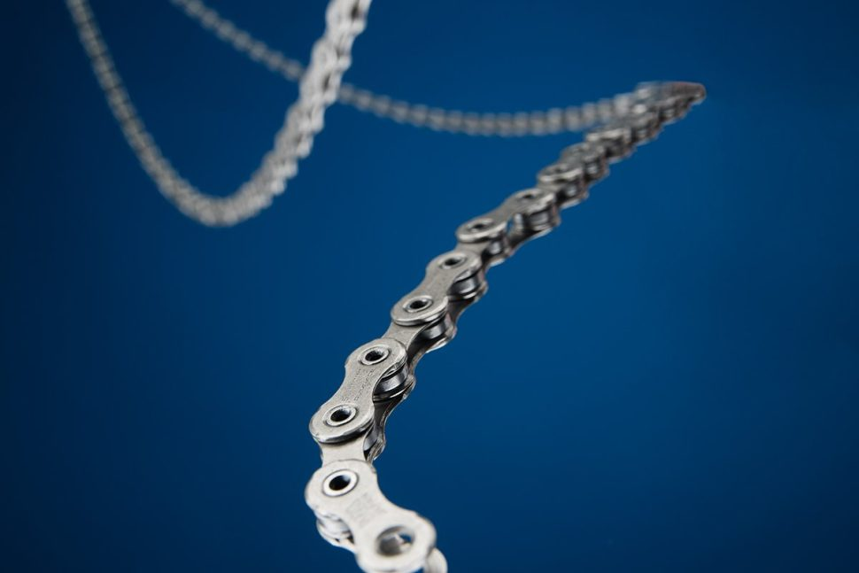

Key Milestones
• Bicycle chain invented: 1880
• Roller chain design breakthrough: 1898
• Average chain length: 110-120 links
• Lifespan: 2,000-3,000 miles (depending on care)
The Origins of Bicycle Chains
In the early days of cycling, bicycles used direct drive systems, which made pedaling difficult and limited gear options. The advent of the chain drive system in the late 19th century changed the game by allowing more efficient and versatile gearing.
Comparing Chain Types
| Type | Durability | Weight | Price |
|---|---|---|---|
| Basic Steel | Good | 300g | $15-$25 |
| Chromoly Steel | Excellent | 280g | $30-$40 |
| Carbon Fiber | Outstanding | 220g | $150+ |
Modern Chain Advancements
Modern chains are designed for greater efficiency, reduced wear, and lighter weight. Innovations like hollow pins, ceramic coatings, and even self-lubricating chains are pushing the boundaries of performance.